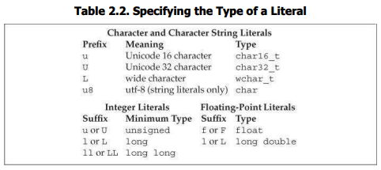

42와 같은 값은 리터럴(literal, 문자 그대로)이라고 알려져 있는데 왜냐하면 그 값이 자명하기 때문이다. 모든 리터럴은 타입을 갖는다. 리터럴의 형식과 값이 그 타입을 결정한다.
10진법, 8진법, 16진법 표기를 이용해 정수 리터럴을 작성할 수 있다. 0으로 시작하는 정수 리터럴은 8진수로 해석된다. 0x나 0X로 시작하는 정수 리터럴은 16진수로 해석된다. 예를 들어 20이라는 값을 다음 세 가지 방식 가운데 하나로 작성할 수 있다.
20 /* decimal */ 024 /* octal */ 0x14 /* hexadecimal */정수 리터럴의 타입은 제 값과 표기법에 의존한다. 디폴트로 10진수 리터럴에는 부호가 있는 한편 8진수나 16진수 리터럴에는 부호가 있을 수도 있고 없을 수도 있다. 10진수 리터럴은 리터럴의 값이 부합하는 한에서 가장 작은 int, long 또는 long long 타입을 갖는다.8진수와 16진수 리터럴은 리터럴의 값이 부합하는 한에서 가장 작은 int, unsigned int, long, unsigned long, long long, 또는 unsigned long long 타입을 갖는다. 가장 큰 연관 타입에 너무 큰 리터럴 값을 사용하는 것은 오류다. short 타입의 리터럴은 없다. 표 2.2를 통해 이들 디폴트에 접두사를 이용해 덮어쓸 수 있다는 사실을 볼 수 있다.
정수 리터럴이 부호 있는 타입에 저장될 수 있다고 하더라도, 엄밀히 말하면 10진수 리터럴은 결코 음수가 아니다. 음수 10진수로 보이는 것을 작성하면, 가령 -42를 작성하면, 마이너스 부호는 리터럴의 일부가 아니다. 여기서 마이너스 부호는 연산자로, 제 (리터럴) 피연산자의 값을 부정한다.
부동소수점 리터럴은 소수점 표기법과 지수를 통한 과학적 표기법으로 구성된다. 과학적 표기법을 이용하면, 지수는 E나 e로 암시된다.
3.14159 3.14159E0 0. 0e0 .001디폴트로, 부동소수점 리터럴은 double 타입을 갖는다. 표 2.2의 접두사를 이용해 이 디폴트를 덮어쓸 수도 있다.
작은 따옴표로 묶인 문자는 char 타입 리터럴이다. 큰따옴표로 묶인 0개 이상의 문자는 스트링 리터럴을 표시한다.
'a' // 문자 리터럴
"Hello World!" // 스트링 리터럴스트링 리터럴의 타입은 char 상수의 배열(array)로, §3.5.4에서 다룰 것이다. 컴파일러는 모든 스트링 리터럴에 널 문자(‘\0’)를 덧붙인다. 따라서 스트링 리터럴의 실제 크기는 원래 크기에서 하나를 더한 것이다. 가령 리터럴 ‘A’는 단일 문자 A를 표현하는 반면 스트링 리터럴 “A”는 문자 A와 널 캐릭터로 구성되는 두 문자의 배열을 표현한다.
떨어진 것으로 보이지만 스페이스, 탭, 개행으로 분리됐을 뿐인 두 스트링 리터럴은 단일 스트링 리터럴로 합쳐진다. 이 형식의 리터럴을 이용해 단일 라인에 편하게 맞추기 어려울 정도로 큰 리터럴은 분리하여 작성할 수 있다.
// multiline string literal
std::cout << “a really, really long string literal “
“that spans two lines” << std::endl;백스페이스나 제어 문자와 같은 문자들은 시각적인 이미지를 갖지 않는다. 이와 같은 문자들은 출력 불가능(nonprintable)하다. (작은따옴표, 큰따옴표, 물음표, 백슬래시 같은) 다른 문자들은 언어에서 특수한 의미를 차지한다. 프로그램은 이들 문자를 직접적으로 사용할 수 없다. 대신 이스케이프 시퀀스(escape sequence)를 이용해 이런 문자를 표현한다. 이스케이프 시퀀스는 백슬래시로 시작한다. 언어는 몇 가지 이스케이프 시퀀스를 정의한다.
newline \n horizontal tab \t alert(bell) \a
vertical tab \v backspace \b double quote \"
backslash \\ question mark \? single quote \'
carriage return \r formfeed \fstd::cout << '\n'; // 개행 출력
std::cout << "\tHi!\n" // prints a tab followed by “Hi!” and a newline일반화된 이스케이프 시퀀스를 작성할 수도 있다. 이는 하나 이상의 16진수로 이어지는 \x나 하나 또는 둘 또는 세 기수의 8진수로 이어지는 \이다. 값은 해당 문자의 수치적 값을 표현한다. 아래는 (Latin-1 문자 집합을 가정하는) 몇 가지 예시다.
\7 (bell) \12 (newline) \40 (blank)
\0 (null) \115 (‘M’) \x4d(‘M’)언어가 정의하는 이스케이프 시퀀스와 마찬가지로, 이들 이스케이프 시퀀스를 마치 여타 문자처럼 사용할 수도 있다.
std::cout << “Hi \x4dO\115!\n”; // prints Hi MOM! followed by a newline
std::cout << ‘\115’ << ‘\n’l; // prints M followed by a newlineL ‘a’ // wide character literal, type is wchar_t
u8”hi!” // utf-8 string literal (utf-8 encodes a Unicode character in 8 bits)
42ULL // unsigned integer literal, type is unsigned long long
1E-3F // single-precision floating-point literal, type is float
3.14159L // extended-precision floating-point literal, type is long double정수 리터럴의 부호 표기 여부와 크기를 독립적으로 특정할 수도 있다. 접미사가 U로 구성된다면, 리터럴은 부호 없는 타입을 갖는다. 따라서 접미사 U를 포함하는 10진, 8진, 16진 리터럴은 리터럴의 값에 맞는 unsigned int, unsinged long, unsinged long long의 가장 작은 타입을 갖는다. 접미사가 L을 포함한다면, 리터럴의 타입은 적어도 long이다. 접미사가 LL을 포함한다면, 리터럴의 타입은 long long이나 unsigned long long이다. U와 L 또는 LL을 혼용할 수도 있다. 가령 접미사 UL이 붙은 리터럴은 그 값에 따라 unsigned long이나 unsigned long long이 될 것이다.
true와 false는 bool 타입의 리터럴이다.
bool test = false;nullptr는 포인터 리터럴이다. 이는 §2.3.2에서 더 자세히 다룬다.
연습문제 2.5 아래 리터럴의 타입을 결정할 것. 리터럴 간의 차이점을 설명할 것.
'a',L'a',"a",L"a"10, 10u, 10L, 10uL,012,0xc3.14, 3.14f, 3.14L10, 10u, 10.,10e-2연습문제 2.6 아래 정의들 간의 차이점이 있다면 무엇이 다른가?
int month = 9, day = 7;int month = 09, day = 07;연습문제 2.7 이들 리터럴이 무슨 값을 표현하는가? 각각 어떤 타입을 갖는가?
"Who goes with F\145rgus?\012"code>3.14e1L1024f3.14L연습문제 2.5 이스케이프 시퀀스를 이용해 개행으로 이어지는 2M을 출력하는 프로그램을 작성할 것. 2, 탭, M, 개행을 순서대로 출력하도록 프로그램을 조정할 것.
C++ Primer 5th Edition
(Lippman, Lajoie, Moo)
번역 김태원